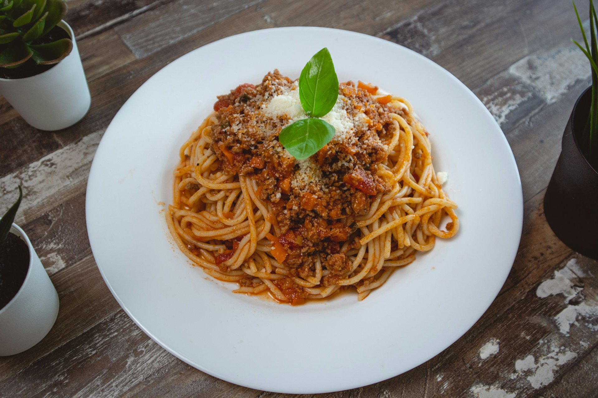

The Recipes
Click on the title name of any recipe to view the full recipe.
Fried Rice

Fried Rice is a popular dish made with cooked rice, vegetables, and sometimes meat or eggs. It is a versatile meal that can be customized with various ingredients and seasonings.
Spaghetti Bolognese

Spaghetti Bolognese is a classic Italian dish made with spaghetti pasta and a rich, meaty sauce. It is a comforting and satisfying meal that is perfect for family dinners.
Texas Sheet Cake

Texas Sheet Cake is a rich and moist cake that is often made with a simple cake mix and topped with a sweet frosting. It is a popular dessert that is easy to make and always a hit at parties and gatherings.
Nasi Lemak

Nasi Lemak is a beloved Malaysian dish consisting of fragrant coconut rice served with various accompaniments such as sambal, fried anchovies, and a hard-boiled egg. It is a hearty and satisfying meal that reflects the rich culinary heritage of Malaysia.
And more to come!